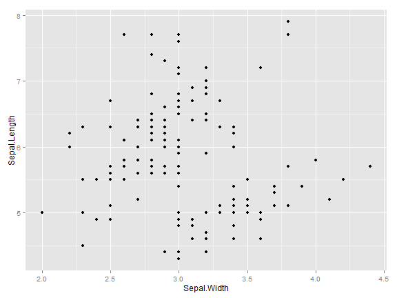

Data visualization with ggplot2
Cork R-User's Group
Darren L Dahly
ggplot2 works with dataframes
require(ggplot2)
head(iris)
## Sepal.Length Sepal.Width Petal.Length Petal.Width Species
## 1 5.1 3.5 1.4 0.2 setosa
## 2 4.9 3.0 1.4 0.2 setosa
## 3 4.7 3.2 1.3 0.2 setosa
## 4 4.6 3.1 1.5 0.2 setosa
## 5 5.0 3.6 1.4 0.2 setosa
## 6 5.4 3.9 1.7 0.4 setosa
Object class matters
lapply(iris, class)
## $Sepal.Length
## [1] "numeric"
##
## $Sepal.Width
## [1] "numeric"
##
## $Petal.Length
## [1] "numeric"
##
## $Petal.Width
## [1] "numeric"
##
## $Species
## [1] "factor"
Minimal example
ggplot(iris, aes(x = Sepal.Width)) +
geom_bar()

plot <- ggplot(iris, aes(x = Sepal.Width))
plot <- plot + geom_bar()
plot
Data
ggplot(iris[1:10, ], aes(x = Sepal.Width)) +
geom_bar()

ggplot(subset(iris, Species == "setosa"), aes(x = Sepal.Width)) +
geom_bar()
require(dplyr)
iris %>%
filter(Species == "virginica") %>%
ggplot(aes(x = Sepal.Width)) +
geom_bar()